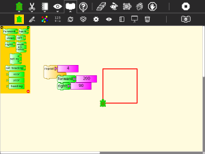
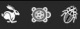
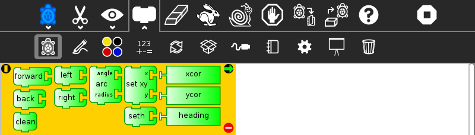
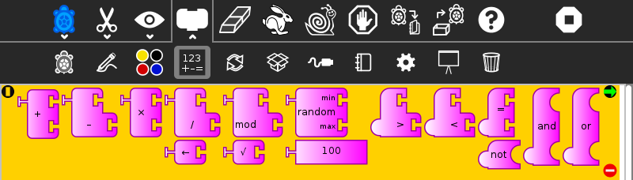
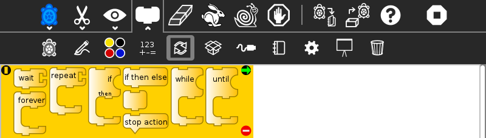
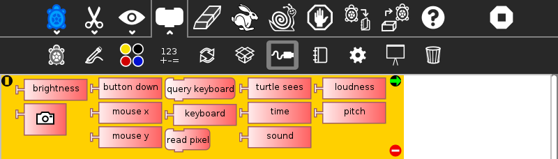
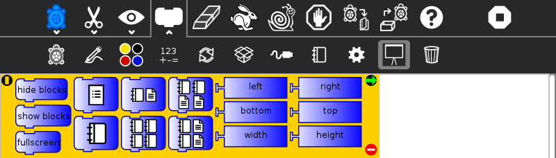
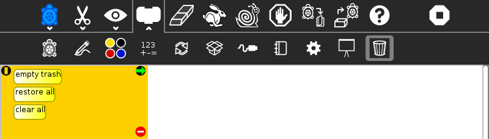
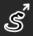
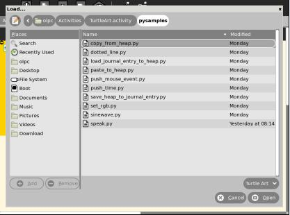

Turtle Art
About

Turtle Art, also known as Turtle Blocks, is an activity with a Logo-inspired graphical “turtle” that draws colorful art based on snap-together visual programming elements. Its “low floor” provides an easy entry point for beginners. It also has “high ceiling” programming, graphics, mathematics, and Computer Science features which will challenge the more adventurous student.
Where to get Turtle Art
Is included in the OLPC image, and can be downloaded from the Sugarlabs Activities repository
Note
There are two inter-compatible programs: Turtle Art and Turtle Blocks. Turtle Art, which closely parallels the Java version of Turtle Art maintained by Brian Silverman, offers a small subset of the functionality of Turtle Blocks. Turtle Blocks is the version included in the Sugar distribution. Sugar users probably want to use Turtle Blocks rather than Turtle Art. (Also see Turtle Confusion, a collection of programming challenges designed by Barry Newell.)
Using Turtle Art

Start by clicking on (or dragging) blocks from the Turtle palette. Use multiple blocks to create drawings; as the turtle moves under your control, colorful lines are drawn.
You add blocks to your program by clicking on or dragging them from the palette to the main area. You can delete a block by dragging it back onto the palette. Click anywhere on a “stack” of blocks to start executing that stack or by clicking in the Rabbit (fast) , Turtle (slow) or Bug (debug) buttons  on the Project Toolbar.
Toolbars
Main Toolbar
From left to right:
- Activity toolbar (includes sharing; saving/loading options);
- Edit toolbar (including copy and paste);
- View toolbar (including full-screen, coordinate overlays; turtle status, etc.);
- Palette toolbar (including all programming blocks);
- erase canvas;
- run project fast (rabbit);
- run project slow (snail);
- stop project;
- save a snapshot (save a copy of the current state of the project);
- load examples;
- display help palette;
- stop activity
Keyboard short cuts for the above: Alt+ palette; blocks; run; walk; stop; erase; e.g., Alt+e will erase the screen. Esc will return from full-screen mode.
Notes: The run buttons are tied to the Start Block. If no Start Block is used, then all blocks are run when either run button is clicked. The “rabbit” button runs the blocks at maximum speed. The “snail” button pauses and displays the turtle and block values between each step.
On older versions of Sugar (e.g., 0.84), the main toolbar will look like this:

Turtle Palette

These blocks are used to control the movements of the turtle.
- forward: move turtle forward
- back: move turtle backward
- clean: clear the screen and position the turtle in the center of the screen, pen down, color red, heading 0
- left: rotate turtle counterclockwise
- right: rotate turtle clockwise
- arc: move turtle along an arc
- set xy: set turtle x,y position (0,0) is the center of the screen
- seth: set turtle heading
- xcor: holds current x-coordinate value of the turtle (can be used in place of a number block)
- ycor: holds current y-coordinate value of the turtle (can be used in place of a number block)
- heading: holds current heading value of the turtle (can be used in place of a number block)
Pen Palette

These blocks are used to control the attributes of the turtle’s pen.
- pen up: turtle will not draw when moved
- pen down: turtle will draw when moved
- set pen size: sets the width of the line drawn by the turtle
- fill screen: fill the screen with a color/shade and reposition the turtle in the center of the screen
- pen size: width of the line drawn by the turtle (can be used in place of a number block)
- set color: sets the pen color
- set shade: sets the pen shade
- set gray: sets the gray-level of the pen (Only available in Turtle Blocks)
- color: current pen color (can be used in place of a number block)
- shade: current pen shade (can be used in place of a number block)
- gray: current pen gray level (can be used in place of a number block) (Only available in Turtle Blocks)
- start fill: starts a filled polygon (straight sides, not arcs)
- end fill: ends a fill polygon (straight sides, not arcs)
Color Palette

These blocks can be used with the set-pen-color block in place of a number block.
Numbers Palette

These blocks are arithmetic and boolean operators.
- addition: adds two numeric inputs (also can be used to concatenate strings)
- subtraction: subtracts the bottom numeric input from the top input
- multiplication: multiplies two numeric inputs
- division: divided top input (numerator) by bottom input (denominator)
- identity: identity function (used for spacing blocks)
- modulo (remainder): calculates remainder when dividing top input by the bottom input
- square root (Only available with Turtle Blocks)
- random number: generates a random integer between the minimum and maximum values
- number block: a numeric input
- greater than: boolean greater than operator (used with flow blocks)
- less than: boolean less than operator (used with flow blocks)
- equal to: boolean equal to operator (used with flow blocks)
- not: boolean not (Only available with Turtle Blocks)
- and: boolean and (Only available with Turtle Blocks)
- or: boolean or (Only available with Turtle Blocks)
Flow Palette

These blocks control program flow.
- wait: pause program execution (unit is seconds)
- forever: continuously repeat execute stack under the right flow
- repeat: repeat the execution of stack under the right flow a specified number of times
- if/then: conditional execution of the stack under the right flow (uses boolean operators found on the Number palette)
- if/then/else: conditional execution of the stack under the center and right flows (uses boolean operators found on the Number palette)
- vertical spacer
- stop stack: interrupt execution
- while: execute stack under right flow while the condition is true (uses boolean operators found on the Number palette) (Only available with Turtle Blocks)
- until: execute stack under right flow until the condition is true (uses boolean operators found on the Number palette) (Only available with Turtle Blocks)
Note: Nesting while and/or until blocks is not always reliable. If you encounter an error, try putting the nested block in a separate stack, accessed with an action block.
Blocks Palette

These blocks are for defining variables and subroutines.
- start: connects action to toolbar ‘Run’ button
- store in box 1: store a number, string, or media object in box 1 (Only available with Turtle Blocks)
- store in box 2: store a number, string, or media object in box 2 (Only available with Turtle Blocks)
- text: string input
- box 1: current value of box 1 (can be used in place of a number block) (Only available with Turtle Blocks)
- box 2: current value of box 2 (can be used in place of a number block) (Only available with Turtle Blocks)
- box: current value of named box (can be used in place of a number block)
- store in: store a number, string, or media object in a named box
- action: top of named action stack
- action 1: top of action 1 stack (Only available with Turtle Blocks)
- action 2: top of action 2 stack (Only available with Turtle Blocks)
- action: execute named action stack
- action 2: execute action 2 stack (Only available with Turtle Blocks)
- action 1: execute action 1 stack (Only available with Turtle Blocks)
Note: When a named action or named box block are used, new blocks appear on the palette that correspond to these names; e.g., if a top of action stack is rename, “to square”, an action block, “to square” is added to the palette.
Sensors Palette

- query keyboard: check for keyboard input (results are stored in the keyboard block)
- keyboard: current value of keyboard input (can be used in place of a number block)
- read pixel: push the RGB value of the pixel under the turtle onto the FILO (blue is first, red is last)
- turtle sees: the “palette color” of the pixel under the turtle
- time: number of seconds since program began
- sound: raw data from microphone ranging -32000 to 32000
- volume (loudness): ranging 0 to 32000
- pitch: the resolution is +-8Hz
- brightness: average luminance seen through camera
- camera: grab image from camera
- button down: current state of the mouse button (1 == down; 0 == ip)
- mouse x: x position of mouse
- mouse y: y position of mouse
The OLPC XO can measure external inputs with its microphone jack:
- resistance: measurement range is 750 to 14k ohms, (OLPC XO1) and 2k ohms to open circuit (OLPC XO1.5)
- voltage: measurement range is DC 0.4V to 1.85V. (OLPC XO1) and 0.17V to 3.0V (OLPC XO1.5)
The OLPC XO 1.75 also includes an accelerometer.
- accelerate (not shown): measure the acceleration of the computer. Results are pushed to the stack and can be retrieved by using 3 ‘pop’ blocks (one for X (horizontal), one for Y (vertical), and one for Z (forward/backward))
See Using Turtle Art Sensors for more details about the sensor blocks.
Portfolio Palette

These blocks are used to make multimedia presentations only available in Turtle Blocks.
- hide blocks: hides all blocks and palettes (useful for decluttering the screen during presentations) (also available in Turtle Art)
- show blocks: shows blocks and palettes (useful for resuming programming after a presentation)
- full screen: goes into full-screen mode (hides Sugar toolbars)
- list slide: used for bulleted lists; This block is expandable, allowing you to add as many bullets as you need
- picture slides: used for picture slides (1×1, 2×2, 1×2, and 2×1)
Only available in Turtle Blocks:
- left: holds current x-coordinate value of the left edge of the screen (can be used in place of a number block)
- top: holds current y-coordinate value of the top edge of the screen (can be used in place of a number block)
- right: holds current x-coordinate value of the right edge of the screen (can be used in place of a number block)
- bottom: holds current y-coordinate value of the bottom edge of the screen (can be used in place of a number block)
- width: screen width (can be used in place of a number block)
- height: screen height (can be used in place of a number block)
Note: The slide blocks expand into stacks that can be edited for customized presentations.
Trash Palette

This palette holds any blocks that have been put in the trash. You can drag blocks out of the trash to restore them. The trash palette is emptied when you quit Turtle Art.
Learning with Turtle Art
Tony Forster and Mokurai have created a number of Activities/Turtle Art/Tutorials Turtle Art Tutorials on a wide range of math, programming, art, and Computer Science topics. There is also a substantial literature of educational materials using the Logo programming language, from which Turtle Art and Turtle Blocks derive. The Exploring with Logo series from MIT Press is particularly recommended for showing how far beyond simple graphics Logo can go. Mokurai recommends starting with his first three, specifically designed for helping beginners of all ages, starting with the preliterate in preschool.
Extending Turtle Art
There are versions of Turtle Art in several programming languages and environments, including Logo, Python, Smalltalk, and others. Turtle Art can export programs in Logo, as explained below. There are programmable blocks in Turtle Art which make it possible to include any Python program within the Turtle Art world. The simplest case is a single function call used in a graphing program, but there is no inherent limit on what capabilities of Python one can add to TA.
Exporting to Berkeley Logo
Turtle Art can export its projects to Berkeley Logo (using either View Source or the Save as Logo button on the Project Toolbar)
Python Blocks in Turtle Art
There are two ways to create Python blocks: by loading sample code provided with Turtle Art or by loading Python code the your Journal.
Loading sample code
A number of individual sample programs are provided. Clicking on the Load Python Block button on the Load/Save Toolbar  will invoke a file-selector dialog. Select the sample that you want and it will be both copied to the Journal and loaded into a Python block.

Loading code from the Journal
Clicking on a Python block that has been dragged onto the canvas from the Extras palette will invoke an object-selector dialog.

Select the Python code that that you want and that code will be loaded into the selected block.
You can’t run a Python block by clicking on it, as that opens the object selector; instead attach the block to another one and click elsewhere on the stack you have created.
Which ever way you create them, multiple Python blocks can have different code loaded in them.
Modifying Turtle Art
Turtle Art is under the MIT license. You are free to use it and learn with it. You are also encourage to modify it to suit your needs or just for a further opportunity to learn.
Much of the motivation behind the Version 83 refactoring of the code was to make it easier for you to make changes. Most changes can be confined to two modules: taconstants.py and talogo.py. The former defines the blocks and palettes; the latter defines what code is executed by a block.
Note: As of Version 106, there is also support for plugins. If you can use the plugin mechanism to add support for additional devices, e.g., Arduino, or for making modifications such as are described below without making changes to the standard code base. (The advantage to the latter is that your changes will remain intact even after you upgrade to a newer version.)
The tabasics.py file contains the constants that by-in-large determine the behavior of Turtle Art. Notably, the block palettes are defined below. If you want to add a new block to Turtle Art, you could simply add a block of code to that file or to turtle_block_plugin.py, which contains additional blocks. (Even better, write your own plugin!!)
Adding a new palette is simply a matter of:
palette = make_palette('mypalette', # the name of your palette
colors=["#00FF00", "#00A000"],
help_string=_('Palette of my custom commands'))
For example, if we want to add a new turtle command, ‘uturn’, we’d use the add_block method in the Palette class.
palette.add_block('uturn', # the name of your block
style='basic-style', # the block style
label=_('u turn'), # the label for the block
prim_name='uturn', # code reference (see below)
help_string=_('turns the turtle 180 degrees'))
Next, you need to define what your block will do. def_prim takes 3 arguments: the primitive name, the number of arguments—0 in this case—and the function to call—in this case, the canvas.seth function to set the heading.
self.tw.lc.def_prim('uturn', 0,
lambda self: self.tw.canvas.seth(self.tw.canvas.heading + 180))
That’s it. When you next run Turtle Art, you will have a ‘uturn’ block on the ‘mypalette’ palette.
You will have to create icons for the palette-selector buttons. These are kept in the icons subdirectory. You need two icons: mypaletteoff.svg and mypaletteon.svg, where ‘mypalette’ is the same string as the entry you used in instantiating the Palette class. Note that the icons should be the same size (55x55) as the others. (This is the default icon size for Sugar toolbars.)
Where to report problems
Please file bug reports here.
Credits
Walter Bender and Raúl Gutiérrez Segalés maintain the code (with some occasional help from Simon Schampijer)
Alan Jhonn Aguiar Schwyn and the Butia Team have provided great feedback and many patches.
Especially helpful feedback from Tony Forster, Guzmán Trinidad, and Bill Kerr
Brian Silverman is the first author of Turtle Art


 button, which replaces the Stop button on the main toolbar while the program is executing, is used to reveal the program blocks. Individual palettes can be hidden by clicking on their highlighted tab.
button, which replaces the Stop button on the main toolbar while the program is executing, is used to reveal the program blocks. Individual palettes can be hidden by clicking on their highlighted tab.